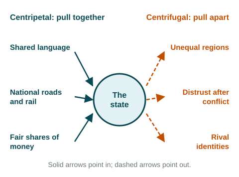

Every state is pulled in two directions at once. Centripetal forces pull it together: things people share, links between regions and a fair deal for all. Centrifugal forces pull it apart: rival identities, unequal regions and distrust. You met these forces in the culture unit. This topic asks what happens to a state when one side wins.

When centrifugal forces win
- Uneven development. When one region is much richer than another, the poorer one may feel neglected and the richer one may resent paying for the rest. The gap is most dangerous when it lines up with language or ethnicity, so that one group is both poorer and different.
- Ethnic nationalist movements. A minority with a strong sense of its own nation may seek self-rule or independence, as many Kurds in Türkiye, Iraq, Iran and Syria have, or many Scots and Catalans.
- Stateless nations. Where centrifugal forces are blocked, a nation may stay without a state, spread across several, as the Kurds are.
- Failed states. A failed state is one whose government has lost control of much of its territory and cannot provide basic services such as security, courts or clean water. After its national government collapsed in 1991, Somalia had no working government across most of its land for many years, while armed groups held different areas. Rebuilding a state after it fails takes decades.
When centripetal forces win
- Cultural cohesion. After independence, Tanzania made Swahili the national language, used in government and as the language of teaching in primary schools. Because Swahili was widely spoken and not tied to one large ethnic group, people from more than 100 groups came to share one national language.
- Fairer spread of roads, rail and services. British Columbia joined Canada in 1871 on the promise of a railway, finished in 1885, that tied it to the rest of the country. Since 1957, Canada's national government has sent extra money to provinces with less to spend, so people across the country get similar public services.
- Ethnonationalism. Ethnonationalism is a strong sense of belonging to one's ethnic nation. Where one nation is most of a state's people, it can hold the state together around a shared identity. It can also push minorities aside, so its effects are argued over.
One trait, two directions
The readers who score the exam want you to see that the same trait can pull both ways at different scales. In Canada, French is centripetal for Quebec, where most people speak it and it builds a shared identity at the local (subnational) scale of the province. At the national scale, the same language difference has fueled two referendums on leaving Canada, so it is centrifugal for Canada. Religion, too, can unite a nation and divide a state that holds several faiths.
| Trait | As a centripetal force | As a centrifugal force |
|---|---|---|
| Language | Swahili shared across Tanzania | French in Quebec, at the scale of Canada |
| Transport | Canada's coast-to-coast railway | A region with no roads to the capital feels cut off |
| Money | Canada's payments to provinces with less | One rich region resenting taxes, as some Catalans argue |
| Ethnic identity | A shared identity in a state that is close to a nation-state | Kurdish self-rule movements in four states |
Putting the unit together
This topic closes the political unit. Nations and states rarely match (4.1); colonialism and independence drew the map (4.2); boundaries divide land and sea (4.4 and 4.5); states share power in different ways (4.6 and 4.7); devolution and supranational bodies challenge sovereignty (4.8 and 4.9). Whether a state holds together depends on the balance of the forces in this topic.